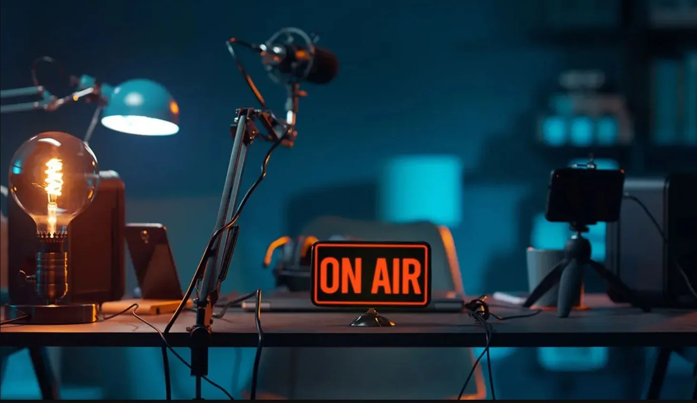

Professional framing
High-quality camera setup, cinematic lighting and clean backgrounds designed for on-camera content.
A professional studio setup for creators, coaches, educators, influencers, business owners and personal brands recording talking-head videos, courses, reels and promotional content.
A professional studio setup for creators, coaches, educators, influencers, business owners and personal brands recording talking-head videos, courses, reels and promotional content.
Ideal for: Creators · Coaches · Educators · Business Owners

High-quality camera setup, cinematic lighting and clean backgrounds designed for on-camera content.
Record YouTube videos, reels, courses, educational content, interviews and business videos.
Capture footage for YouTube, Instagram, LinkedIn, Facebook and online-course platforms.
Final scope depends on your booking and project requirements.
Share the format, duration and production requirements. We’ll use that information to plan the right setup.